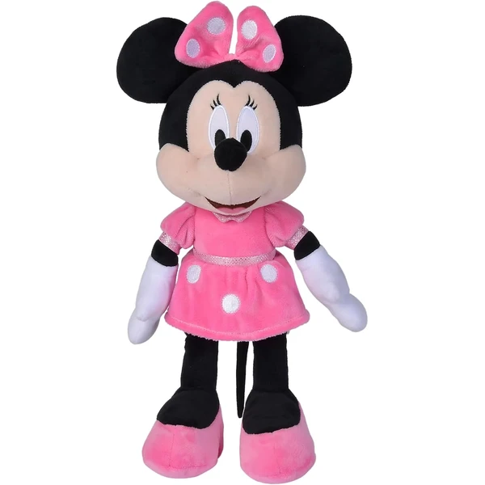
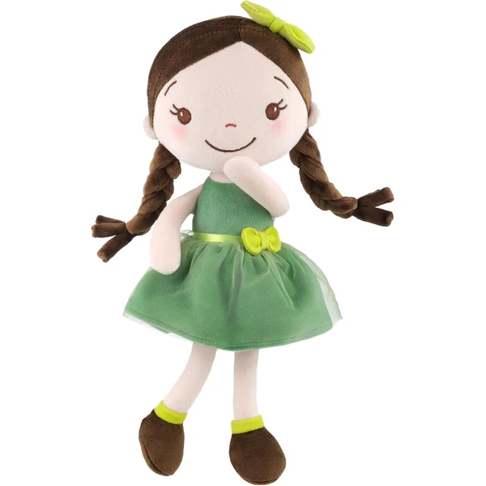
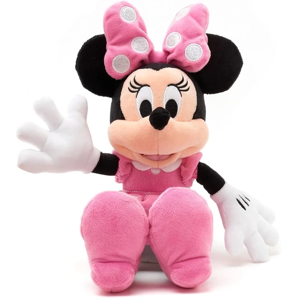
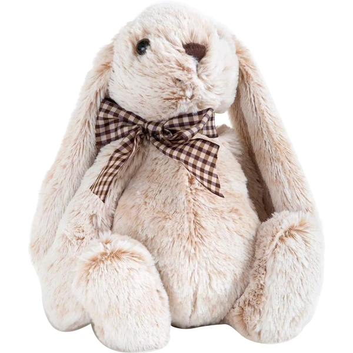
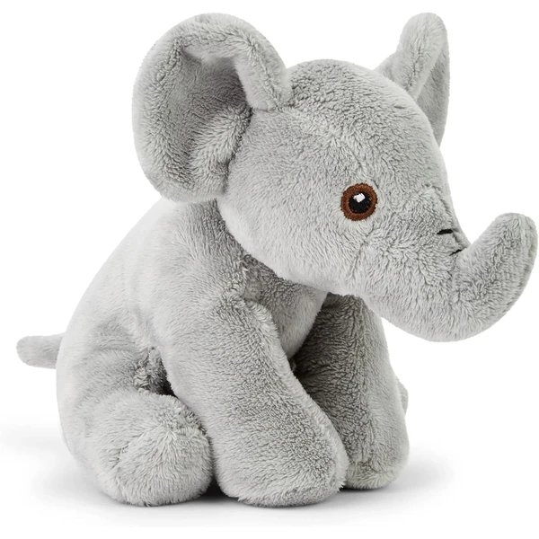
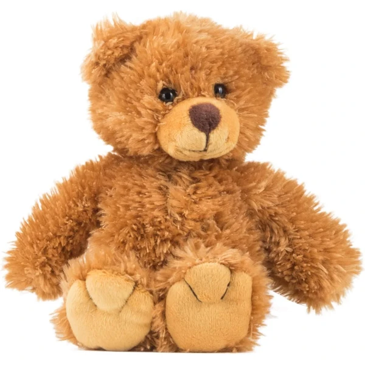

Simba Peluche Minnie Mouse
Un peluche clásico de Minnie Mouse de 35 cm, con licencia oficial Disney y un tacto muy suave. Pensado para convertirse en el compañero de siempre, tanto para abrazar como para dormir.
⭐ ¿Por qué nos gusta?
- ✔ Licencia oficial Disney, 35 cm de altura.
- ✔ Material muy suave, ideal para abrazar.
- ✔ Vestido y lazo clásicos de Minnie.
💬 Lo que más destacan las familias
Muchos padres destacan que el tamaño es perfecto para que el peque lo abrace y lo lleve a todas partes. La suavidad del material también se valora porque aguanta bien el uso diario.
Ver en Amazon

Clementoni Rey León Peluche Texturas
Un peluche de Simba con orejas que suenan, un sonajero interno y una barriguita que chirría, pensado para estimular las habilidades sensoriales. Incluye una anilla para colgarlo del cochecito o la mochila.
⭐ ¿Por qué nos gusta?
- ✔ Orejas sonoras y barriguita que chirría.
- ✔ Colores vivos para estimular la vista.
- ✔ Anilla para colgarlo del cochecito.
💬 Lo que más destacan las familias
Entre los comentarios más habituales aparece lo bien recibido que resulta gracias al diseño de Simba, muy reconocible para toda la familia. Los distintos sonidos también se valoran porque mantienen el interés del peque.
Ver en Amazon

GAGAKU Muñeca de Trapo Ángel
Una muñeca de trapo de 30 cm con diseño de niña con alitas, confeccionada en tela de felpa muy suave. Sin piezas sueltas, pensada como primer amigo de peluche o regalo de bautizo.
⭐ ¿Por qué nos gusta?
- ✔ Tela de felpa suave, sin piezas sueltas.
- ✔ Cumple los estándares de seguridad CE y ASTM.
- ✔ Se lava fácilmente a máquina.
💬 Lo que más destacan las familias
Muchos padres valoran que sea un regalo con un punto especial, muy habitual para bautizos y primeros cumpleaños. La suavidad de la tela también se destaca como uno de sus puntos fuertes.
Ver en Amazon

Disney Store Peluche Minnie Mouse
Un peluche de Minnie Mouse de 33 cm de la línea oficial Disney Store, con vestido de lunares y detalles bordados en la cara. Tejido suave y relleno mullido, pensado para abrazar.
⭐ ¿Por qué nos gusta?
- ✔ Producto oficial de Disney Store.
- ✔ Detalles bordados y lazos tridimensionales.
- ✔ Tamaño de 33 cm, fácil de abrazar.
💬 Lo que más destacan las familias
Se repite bastante el comentario de que el acabado se nota más cuidado que en otras versiones de Minnie, con detalles bien rematados. El tamaño también se valora porque es cómodo de llevar de un lado a otro.
Ver en Amazon

Small Foot Conejo de Peluche
Un conejo de peluche de orejas largas y caídas, con ojos saltones y un tacto muy suave. Un diseño sencillo y atemporal, pensado para acompañar tanto en casa como de viaje.
⭐ ¿Por qué nos gusta?
- ✔ Orejas largas y caídas, diseño clásico.
- ✔ Tacto muy suave, apto desde bebé.
- ✔ Tamaño compacto, fácil de llevar de viaje.
💬 Lo que más destacan las familias
Lo que más suele gustar es el diseño sencillo y atemporal, que no pasa de moda con el tiempo. La suavidad del material también se valora porque resulta muy agradable al tacto.
Ver en Amazon

Zappi Co Elefante Reciclado
Un peluche de elefante de 13-15 cm fabricado con relleno 100% reciclado, pensado para reducir el plástico sin renunciar a la suavidad. Tamaño compacto, ideal como primer peluche o para llevar de viaje.
⭐ ¿Por qué nos gusta?
- ✔ Relleno 100% reciclado, reduce el plástico.
- ✔ Tamaño compacto, fácil de llevar.
- ✔ Costuras reforzadas para aguantar el uso diario.
💬 Lo que más destacan las familias
Muchos padres valoran especialmente que esté hecho con material reciclado, sin perder suavidad ni calidad. El tamaño pequeño también se destaca porque resulta cómodo para las manos de un peque de 2 años.
Ver en Amazon

Schaffer Osito Tom
Un osito de peluche de 19 cm, fabricado con fibras sintéticas resistentes y lavable a máquina. Un diseño sencillo pensado para durar y pasar de una etapa a otra.
⭐ ¿Por qué nos gusta?
- ✔ 19 cm, tamaño compacto y manejable.
- ✔ Lavable a máquina a 30 grados.
- ✔ Fabricado con materiales duraderos.
💬 Lo que más destacan las familias
Entre los comentarios más habituales aparece lo resistente que es pese a su tamaño pequeño, aguantando bien lavados y uso diario. El diseño sencillo también se valora porque no pasa de moda.
Ver en Amazon